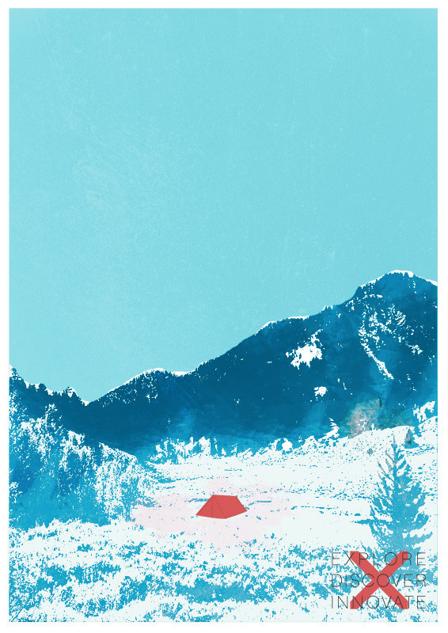
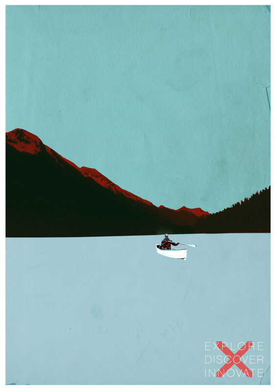
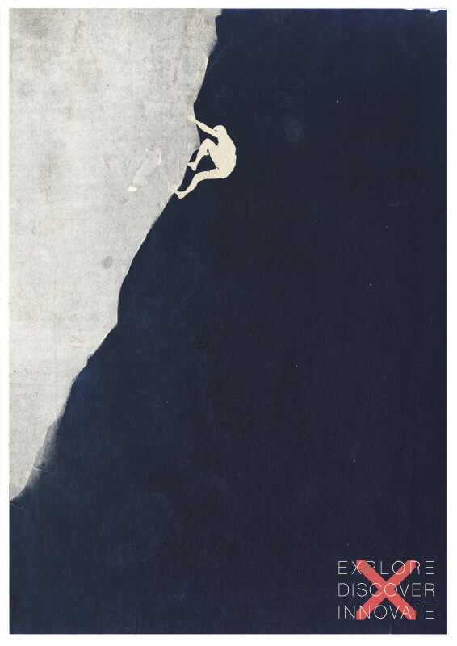
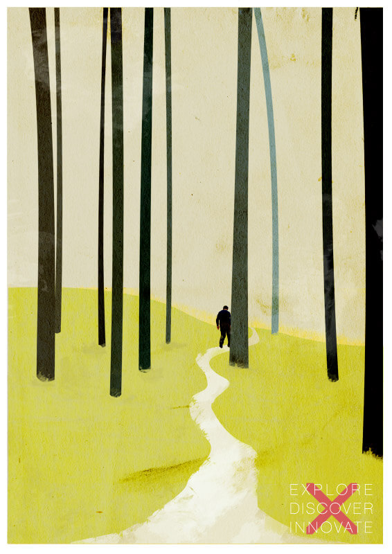
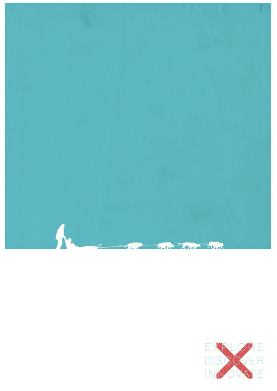

Explore Discover Innovate /
As a small change from my normal web and UX, I decided to flex my creative skills with a series of prints on the theme of Exploration.
The aim of the series was to remember the enduring motivation humans have had for exploring our environment. From this spirit of exploration we have made discoveries and been forced to innovate to reach our goals. The prints give a nod to the sublime with expansive landscapes still untamed by civilisation.
The process of creating this series of prints was the basis for my talk at the Digpen conference last year: The Creative Process / Stop Hallucinating. A version of which is available to read online.
- 
Set Camp
- 
By Canoe
- 
Climbing On
- 
The Walk
- 
By Sled